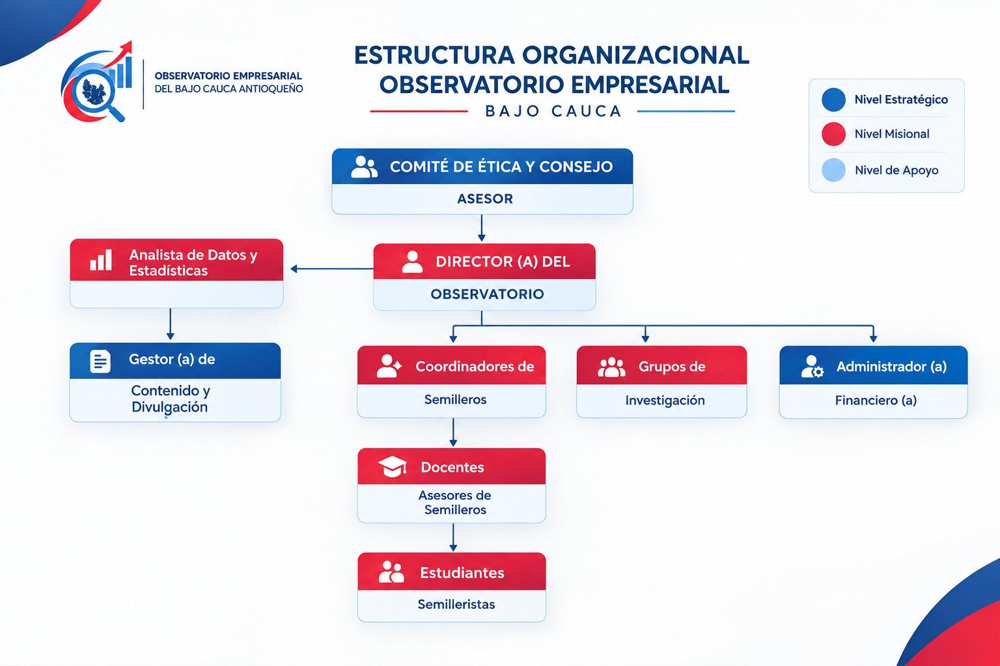

Datos y evidencia
Recolectamos, procesamos y analizamos información con rigor científico para comprender la realidad empresarial y productiva del territorio.
Información que impulsa decisiones y contribuye a transformar territorios.
Generamos conocimiento desde la academia mediante estudios y mediciones de las dinámicas productivas y empresariales del Bajo Cauca Antioqueño.
El Observatorio Empresarial del Bajo Cauca es un espacio académico orientado al estudio y medición de las dinámicas productivas y empresariales de la subregión, al servicio de la toma de decisiones públicas, privadas y comunitarias.
Recolectamos, procesamos y analizamos información con rigor científico para comprender la realidad empresarial y productiva del territorio.
Desarrollamos estudios con orientación práctica y contextual hacia las problemáticas del tejido empresarial local.
Articulamos instituciones educativas, empresas, entidades públicas y comunidad para aportar al desarrollo subregional.
Aportar a la transformación del Bajo Cauca Antioqueño desde la academia a través de estudios y mediciones de dinámicas productivas y empresariales que permitan la toma de decisiones informadas desde lo público y lo privado, contribuyendo así al crecimiento económico de la subregión.
Para el año 2030 ser un referente de consulta para el Bajo Cauca Antioqueño, brindando información veraz y oportuna que permita la toma de decisiones en pro del desarrollo empresarial, productivo y social de los municipios de la subregión.
El Observatorio se organiza en tres niveles de gobernanza: estratégico, misional y de apoyo. Cada cargo cuenta con un manual de funciones y de procesos que asegura el cumplimiento de nuestras políticas institucionales.

Garantiza la visión estratégica, la sostenibilidad financiera, la integridad ética y la ejecución de la agenda de investigación, actuando como principal vocero institucional.
Lidera la implementación técnica de las metodologías de investigación y el procesamiento riguroso de la información.
Administra los canales de divulgación y transforma el contenido técnico en productos accesibles para la comunidad.
Ejecuta diligentemente el presupuesto, la contabilidad y la gestión administrativa del Observatorio.
Aportan capacidad investigativa de campo y generan insumos de análisis primario bajo el marco de la investigación formativa.
Ejecutan la agenda de investigación formativa aplicando rigor científico y procedimientos éticos.
Nuestro trabajo parte de las necesidades del territorio y busca producir información veraz, oportuna y útil, siguiendo un proceso de validación y control de calidad de cinco etapas.
A través de la Política de Promoción Académica, articulamos semilleros, docentes e instituciones educativas del Bajo Cauca en torno a la investigación aplicada.
Buscamos generar nuevos estudios que midan y promuevan la innovación.
Orientamos nuestras prácticas hacia el desarrollo social, económico y ambiental a largo plazo.
Trabajamos en equipo con instituciones educativas, empresas y Estado.
Procuramos información cierta, accesible y oportuna para decisiones responsables.
Estamos comprometidos con el bienestar y desarrollo social empresarial del Bajo Cauca.
Buscamos la mejora continua en nuestros procesos y estudios.
Actuamos éticamente y cumplimos nuestros compromisos con la subregión.
Nos adaptamos a los desafíos del entorno de forma sostenible y progresiva.
Buscamos que la comunidad se apropie del conocimiento y los servicios del Observatorio.
Seis políticas institucionales rigen la manera en que recolectamos, analizamos, publicamos y financiamos nuestro trabajo.
Fija los principios que rigen la conducta de todas las personas relacionadas con el Observatorio: integridad y neutralidad, transparencia, confidencialidad y protección de datos, rigor científico, responsabilidad social, respeto a la diversidad y rendición de cuentas.
Establece métodos, técnicas y consideraciones éticas para que la información recolectada sea certera y útil para la toma de decisiones subregionales.
Asegura la transparencia, accesibilidad y calidad de la información publicada por el Observatorio.
Define cómo se presenta la información en el sitio web, boletines, redes sociales, seminarios y bases de datos descargables.
Comunica los lineamientos para una gestión eficiente, responsable e independiente de los recursos del Observatorio.
Fomenta una cultura de investigación sostenible con enfoque territorial en instituciones educativas del Bajo Cauca.
Espacio preparado para presentar los productos de investigación del Observatorio, cada uno con ficha técnica, licencia y trazabilidad.
Información periódica sobre las dinámicas del territorio, con ficha técnica y licencia CC BY 4.0.
Datos y resultados presentados de manera clara, visual y accesible.
Hallazgos e ideas de investigación elaborados por semilleros, en formatos breves y accesibles.
Resultados completos de investigaciones, validados en las cinco etapas de control de calidad.
La autonomía del Observatorio es un principio innegociable: ninguna fuente de financiación condiciona nuestras metodologías, resultados o conclusiones.
Ninguna fuente de financiamiento influye en nuestras metodologías, resultados o conclusiones.
Buscamos activamente varias fuentes de ingreso para evitar depender de un único financiador.
El origen de nuestros fondos es público y accesible en el sitio web del Observatorio.
Administramos los recursos de manera responsable, austera y orientada al impacto.
Compromiso de rendición de cuentas: el Observatorio publicará anualmente un informe de gestión con el detalle financiero de sus ingresos y una lista accesible de su financiación primaria.
¿Quieres conocer nuestros estudios, consultar información o establecer una alianza? Escríbenos.
Observatorio Empresarial del Bajo Cauca
Uniremington
Canal exclusivo de solicitudes de información y consultas
Tiempo de respuesta: hasta 10 días hábiles, según la Política de Presentación de Información